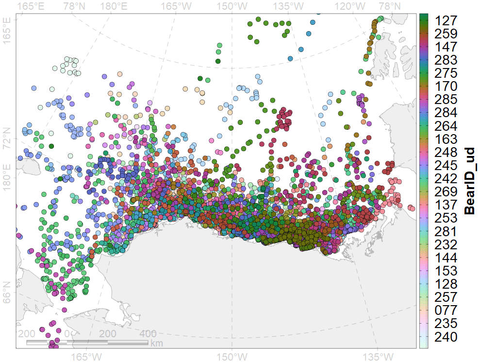
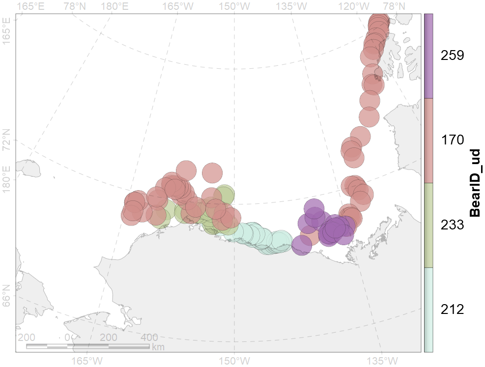
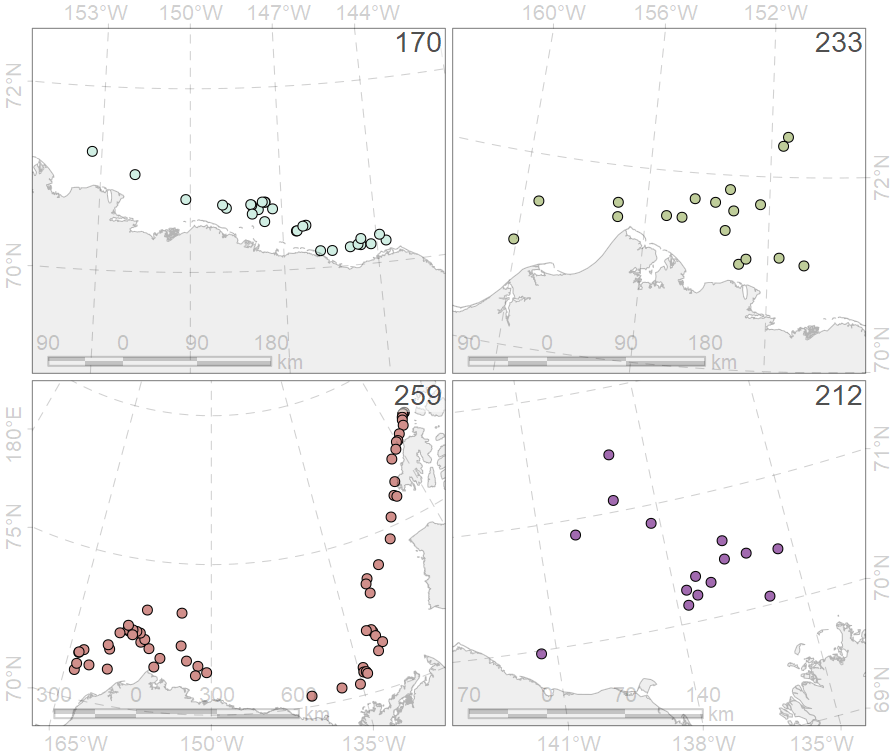
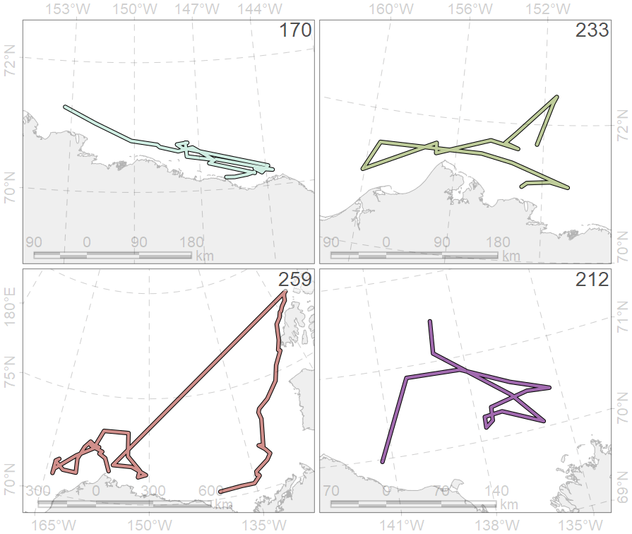
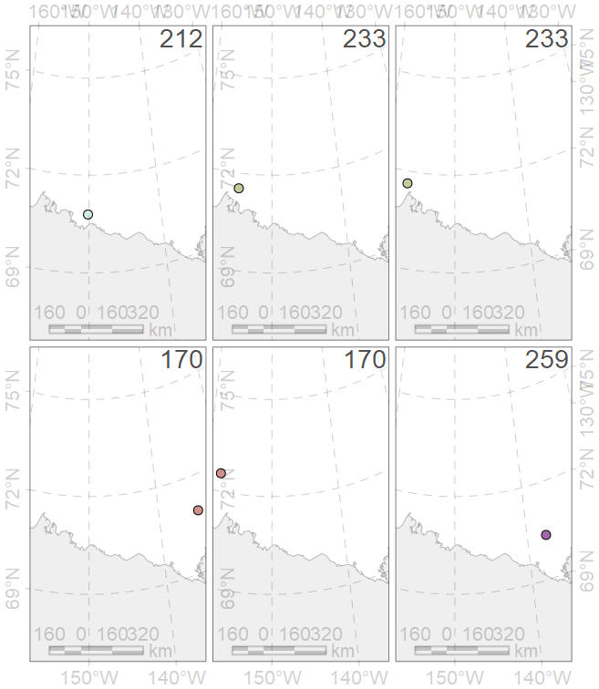
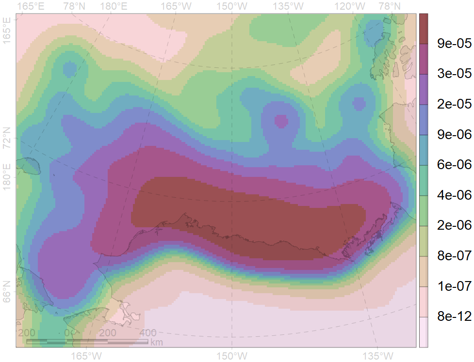

Растровые и векторные данные
Вектор
Геометрия (точка, линия, полигон)
Таблица с атрибутами, связанная с геометрией (один к одному)
Информация о проекции
Исходные данные
Пример на основе данных (Durner, 2019), используемых в работе (Durner et al., 2019).
Исходные данные - локации белых медведей по данным спутниковой биотелеметрии. Фрагмент атрибутивной таблицы:
| BearID_ud | DateTimeUTC_ud | season | period | coords.x1 | coords.x2 |
|---|---|---|---|---|---|
| 244 | 10/1/2008 0:01 | gth | 0716 | -147.985 | 70.491 |
| 244 | 10/4/2008 2:01 | gth | 0716 | -147.985 | 70.491 |
| 244 | 10/7/2008 3:00 | gth | 0716 | -147.984 | 70.491 |
| 244 | 10/10/2008 4:00 | gth | 0716 | -147.985 | 70.491 |
| 244 | 10/13/2008 4:00 | gth | 0716 | -147.985 | 70.491 |
| 127 | 8/17/2006 0:00 | mlt | 9606 | -150.414 | 72.464 |
| 127 | 8/20/2006 16:01 | mlt | 9606 | -150.967 | 72.848 |
| 127 | 8/24/2006 16:00 | mlt | 9606 | -154.550 | 73.357 |
| 127 | 8/27/2006 16:00 | mlt | 9606 | -155.652 | 73.748 |
| 127 | 8/30/2006 16:00 | mlt | 9606 | -156.683 | 73.872 |

Вместе
POINT (точки)

Выборка по четырем случайным особям.
LINESTRING (линии)

Линии - соединение точек.
POLYGON (полигоны)

Полигоны - буфер вокруг точек.
Раздельно
POINT (точки)

LINESTRING (линии)

POLYGON (полигоны)

{geom} vs MULTI{geom}
В каждой строке таблицы атрибутов есть поле геометрии
В поле геометрии представлена информация, как географически представлена запись (точка, линия, полигон).
В поле геометрии может храниться список, то есть, несколько пространственных точек, несколько линий, несколько полигонов. В этом случае тип данных (по геометрии) будет множественным (MULTIPOINT, MULTILINESTRING, MULTIPOLYGON).
POINT vs MULTIPOINT:
POINT
| id | BearID_ud |
|---|---|
| max:0716 | 212 |
| max:0716 | 233 |
| max:0716 | 233 |
| max:0716 | 170 |
| max:0716 | 170 |
| max:0716 | 259 |

MULTIPOINT
| id | BearID_ud | npt |
|---|---|---|
| max:0716 | 170 | 2 |
| max:0716 | 212 | 1 |
| max:0716 | 233 | 2 |
| max:0716 | 259 | 1 |

Растр
Сетка
Размер ячейки
Пространственный охват (минимальные и максимальные значение по обоим осям)
Число стобцов и строк
Информация о проекции
Данные (многослойные) в числовых значениях
Категории
Таблица цветов
Псевдоцвета

Для отображения используются псевдоцвета, градации серого, RGB
Размер ячейки
В отличие от вектора, в растрах жестко заданы характеристики пространственной сетки
Категории

Растры позволяют оперировать с номинальными шкалами